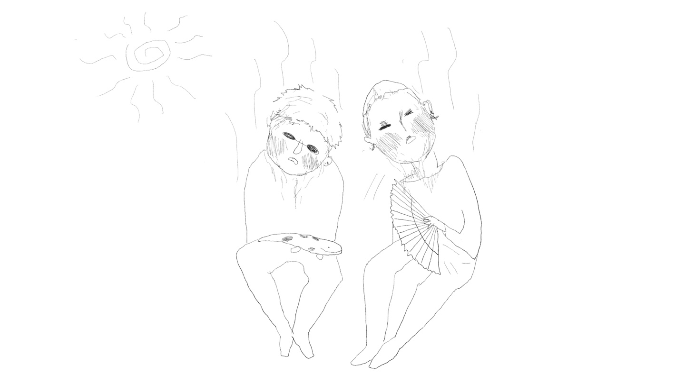

생일축하해
거기 잘 있니, 여기서 너를 생각할때면 그 풍경엔 항상 눈이 내려. 중력에 순응하고 풍경의 요철에 따라 주름진 하얀 이불 같은 것. 네가 독일에 정말로 간다고 했을 때 그런 겨울 풍경을 떠올리곤 했어. 눈처럼 조용히 가려는 구나. 녹으면 또 어디로 갈거야?
근데 나는 이제 방법을 알지. 지난해 네가 덴마크 갔을 적 역시 너한테도 실러켄스를 주고싶어 나무를 깎았더니 시간이 빨리 가더라. 완성을 채 못했는데도 돌아왔어. 건네는 순간 당신이 많이 보고싶었음을 고백하는 것 같아 심하게 부끄러웠다만 네가 그 물고기에 이름을 지어줘서 기뻤다. 그러니까 이번에도 혼자서 만들기를 하고 공부도 하면 조만간 만날거라 믿어. 그날은 세상 아무도 안바빴으면.
나는 그럭저럭 잘 있어. 담배가 부쩍 늘었다. 담배 피울 때마다 속으로는 네 생각을 하면서 입으로는 비가 오려나 같은 아무 말이나 한다.
오늘은 기쁜 날이야.
이번 생일엔 내 소원을 빌자. 달님. 조류랑 같이 있게 해주세요.
조류야 나는 항상 내가 감당 가능한 만큼의 덩어리를 만들고 언젠가 모아보며 행복해 할 것을 소원하고 있었어. 조야할 꼴이 훤해도 그때야 비로소 스스로를 인정할 수 있을 것 같아 나름대로 필사적이야. 지친 생과 업을 분리하기로 한 후에도 아직도 그날을 위해 오래 살아볼 만 하다고도 생각해.
그때 같이 있어주라. 인세에 이것 말곤 다른 건 아무 상관없게 만드는 내 보물을 너에게 보여주고 싶다. 그리고 그게 너한테도 보물이면 좋겠다. 너는 이미 있겠지 나보다도 단단할 거야.
그런 의미로 군상전의 마무리도 같이 해줬으면 해. 같이 생을 즐겨보지 않으련
모쪼록 이번 생일은 어떻게 지낼거니, 거기는 숨이 잘 쉬어지니, 그랬으면 좋겠다. 잘은 모르겠지만 나는 너를 영원히 미워할 수 없을 거야. 무슨 일 있으면 말해 날아갈게. 시체유기정도는 같이 해줄 수 있어.
그럼 안녕.
보물아
2024.05.02. 서희가.

+, 가끔 속으로 하는 '가장 평화로웠던 순간 나열 대회'에서 나는 아직도 '더운 여름, 교토에서, 수족관 보고, 전철 기다리면서, 너는 부채질을 해주고, 우리가 같이 끝말 잇기 했던 시간'이 일등이다. 이만큼이나 좋아합니다.